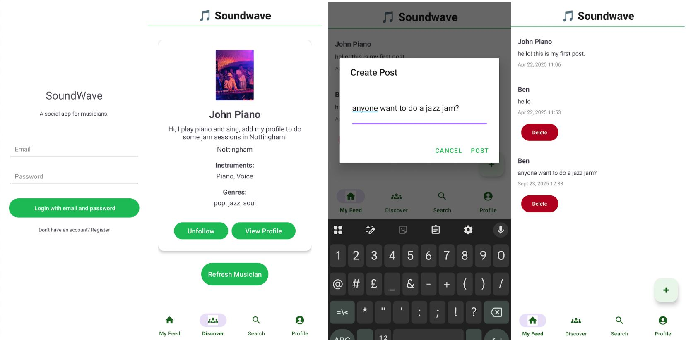

SoundWave – A Social Space for Musicians

Final Year Project | Android, Firebase, Figma
A mobile social networking app designed to connect musicians for collaboration and discovery.
Built in response to gaps in existing platforms, SoundWave offers features for finding collaborators, sharing music, and exploring new genres.
Developed using Android Studio, Firebase Authentication, and Firestore. UI/UX prototyped in Figma with Material 3 design.